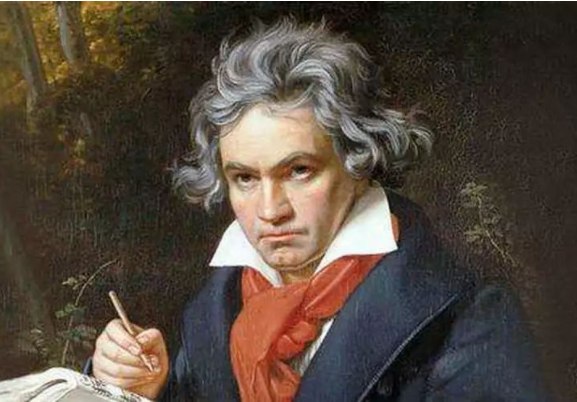
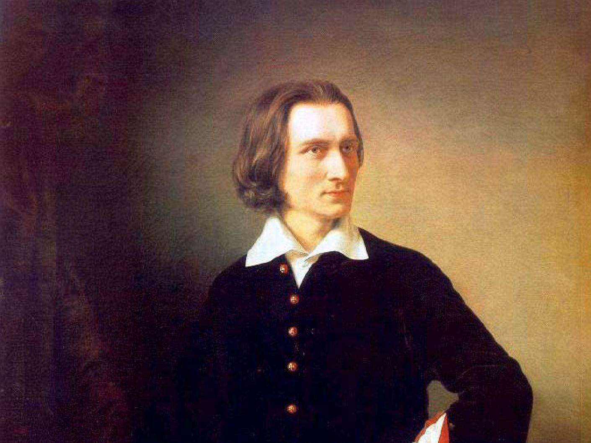
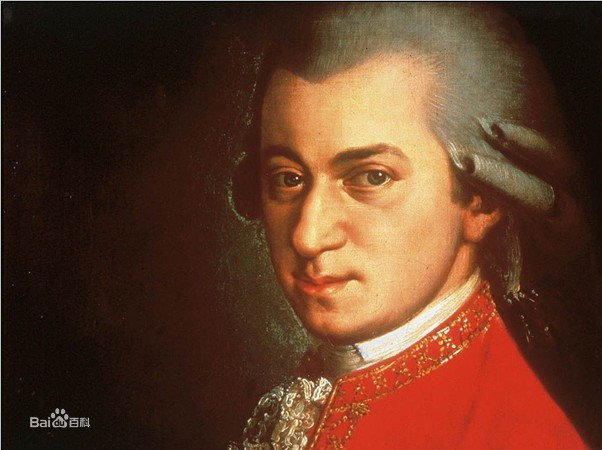

大连清晞有限公司的创业团队由一群怀有共同创业梦想、具有创新意识、有着不同专 业知识背景的年青人组成。作为最具竞争力的一个创业团队，我们的队员各有所长：有 化学专业的技术型人才、有的是销售能手、也有擅长财务统计精英、同样有计算机学院 的学生会同学负责网站管理，还有美术学院的美女负责产品包装。我们专业技能互补、 性格气质各有特点，彼此各取所需，精诚合作。
大连清晞有限公司在创业初期采用“直线—职能”制组织结构形式(如图 2.2 所示)， 拟设董事长一名，总经理一名，下设运营总监、企划总监、技术总监、财务总监和行政 总监分管各部门，并设有研发和技术顾问。 最高决策机构为公司董事会，主要负责公司的经营决策、公司制度的审批、高层管 理人员的聘用等方面重大决策。公司设董事长，对董事会负责，主持企业日常经营管理。 公司设有总经理办公室，由总经理领导，运营总监、技术总监、财务总监和行政总监组 1314 成。各部门遵守目标一致、分工与协作原则、责权对等和信息畅通原则，共同致力于公 司的健康发展。

【c小调第五交响曲】又名命运交响曲（Fate Symphony），是德国作曲家贝多芬创作的交响曲，作品67号，完成于1807年末至1808年初以音乐中的短—短—短—长节奏动机开场。整首交响曲可以被看到是情感的发展，从c小调第一乐章的冲突与斗争，发展到c大调末乐章的胜利与喜悦。最末乐章是全曲的最高潮，在声音上更有力。

【钟】《钟》是李斯特为献给德国钢琴家克拉拉、舒曼而作的钢琴曲集。《帕格尼尼主题大练习曲》六首中的第三首。李斯特的《La campanella》《钟》又名泉水， 作于1834年，钢琴独奏曲，升g小调，稍快板，6/8拍。由匈牙利作曲家李斯特根据帕格尼尼的小提琴曲《钟》改编

【小星星变奏曲】《小星星变奏曲》为C大调作品第K. 265/300e由莫扎特于1778年所创作的钢琴曲。原题直译的意思为在法国歌曲《妈妈请听我说》基础上创作的12段变奏曲。
其变奏曲的第一段，后由英国女诗人Jane Taylor配以歌词，成为广为人知的《小星星》儿歌（Twinkle Twinkle Little Star，一闪一闪小星星）。
【c小调第五交响曲】又名命运交响曲（Fate Symphony），是德国作曲家贝多芬创作的交响曲，作品67号，完成于1807年末至1808年初以音乐中的短—短—短—长节奏动机开场。整首交响曲可以被看到是情感的发展，从c小调第一乐章的冲突与斗争，发展到c大调末乐章的胜利与喜悦。最末乐章是全曲的最高潮，在声音上更有力。
【钟】《钟》是李斯特为献给德国钢琴家克拉拉、舒曼而作的钢琴曲集。《帕格尼尼主题大练习曲》六首中的第三首。李斯特的《La campanella》《钟》又名泉水， 作于1834年，钢琴独奏曲，升g小调，稍快板，6/8拍。由匈牙利作曲家李斯特根据帕格尼尼的小提琴曲《钟》改编
【小星星变奏曲】《小星星变奏曲》为C大调作品第K. 265/300e由莫扎特于1778年所创作的钢琴曲。原题直译的意思为在法国歌曲《妈妈请听我说》基础上创作的12段变奏曲。
其变奏曲的第一段，后由英国女诗人Jane Taylor配以歌词，成为广为人知的《小星星》儿歌（Twinkle Twinkle Little Star，一闪一闪小星星）。